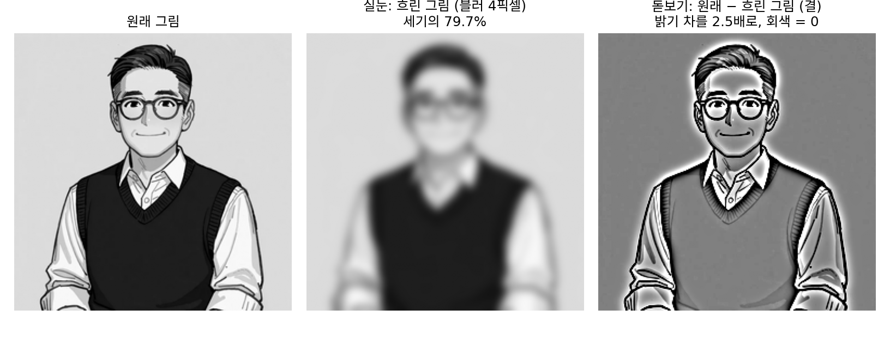
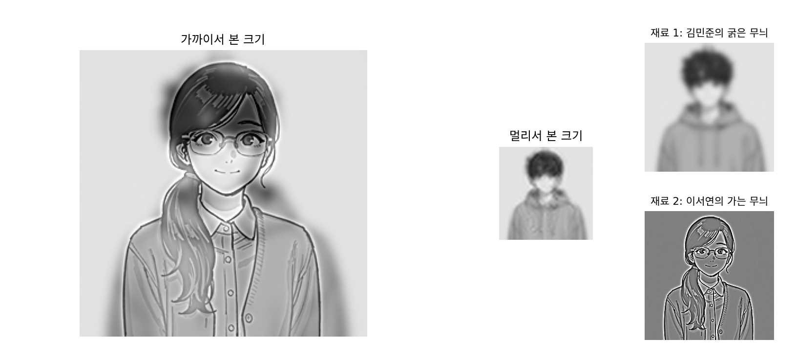

그림을 나누는 축: 스펙트럼
이 장의 물음
VAE 로 되살린 얼굴 사진은 누구인지 알아볼 만했지만 흐렸다. 칸마다 이웃 칸과의 밝기 차로 잰 가는 무늬는 원래 사진의 14.5%만 남았다. 그런데 이웃과의 밝기 차는 어림으로 잰 값이었다. 「가는 무늬」는 정확히 무엇이고, 그림 안에 얼마나 들어 있을까?
미술관에서 그림을 볼 때를 떠올리자. 몇 걸음 물러나 실눈을 뜨면 붓 자국이 사라지고 인물의 자세와 화면의 구도가 한눈에 들어온다. 바짝 다가가 돋보기를 대면 구도는 보이지 않고 붓질의 결과 화가의 손버릇이 보인다. 한 장의 그림 안에 두 층이 겹쳐 있는 셈이다. 그런데 그림 파일은 그림을 칸마다의 밝기로 적는다. 칸 하나에는 구도의 몫과 결의 몫이 함께 들어 있어서, 칸을 하나씩 들여다봐서는 두 층을 가를 수 없다. 이 장은 다음 물음을 따라간다.
- 실눈으로 본 그림과 돋보기로 본 그림을 실제로 떼어 낼 수 있을까? 떼어 내면 각각 얼마나 들어 있을까?
- 칸마다의 밝기 말고 다른 축으로 그림을 적을 수 있을까? 그렇게 적으면 무엇이 쉬워질까?
- 그림의 세기는 굵은 무늬와 가는 무늬에 어떻게 나뉘어 있을까? 어떤 그림이든 같을까?
- 굵기의 구간마다 그림을 따로 떼어 다루려면 어떻게 해야 할까?
공간 주파수: 실눈으로 보는 굵은 무늬, 돋보기로 보는 가는 무늬
실눈을 뜨는 것을 그림 편집 앱으로 흉내 내면 「흐리게」다. 흐리게 하면 구도는 남고 결은 지워진다. 그렇다면 원래 그림에서 흐린 그림을 빼면 돋보기로 보던 결만 남지 않을까? 그리고 흐리게 하기가 무엇은 남기고 무엇은 지우는지를 한 가지 잣대로 말할 수 있을까?
흐린 그림과 그 나머지
이 책 인물인 선생님의 그림을 256 × 256 흑백(밝기 0~1)으로 줄여 쓴다. 굵은 윤곽과 덩어리(머리, 조끼)에 가는 결(안경테, 머리카락, 니트 무늬)이 함께 들어 있어서 두 층을 가르는 시험대로 알맞다. 앱의 블러(이웃 칸들을 종 모양 비율로 평균 내기)를 폭(종 모양의 표준편차) 4픽셀로 걸면 얼굴 윤곽과 조끼, 자세는 그대로이고 안경테와 니트 무늬는 사라진다. 원래 그림에서 이 흐린 그림을 칸마다 빼면 결 그림이 남는다. 결 그림은 선의 테두리에서만 밝고 어둡고, 나머지 칸은 0 근처다. 흐린 그림과 결 그림을 칸마다 더하면 원래 그림이 한 칸도 틀리지 않고 돌아온다.
세기(평균 밝기를 뺀 밝기의 제곱 평균)로 재면 흐린 그림이 원래 세기의 79.7%를 가진다. 결 그림의 밝기 차는 칸마다 평균 0.056, 256단계 눈금으로 14단계쯤이다.

블러는 왜 결만 지울까? 칸 몇 개를 건너 밝고 어둡기가 되풀이되는 촘촘한 무늬는 이웃을 평균 내면 밝은 칸과 어두운 칸이 서로 지워진다. 그림 폭에 걸쳐 천천히 바뀌는 무늬는 이웃끼리 밝기가 거의 같아 평균을 내도 그대로다. 그래서 무늬마다 줄어드는 배율은 그 무늬가 그림 한 폭에 몇 번 되풀이되는가로 정해진다. 이 수를 공간 주파수 (그림 한 폭에 무늬가 몇 번 되풀이되나 / spatial frequency)라 하고, 단위는 그림 한 폭에 든 무늬 수(c/i, cycles per image)다. 폭 4픽셀 블러는 2 c/i 무늬를 0.98배로 거의 그대로 두고, 12 c/i 무늬를 절반으로, 48 c/i 무늬를 10만 분의 1.5로 줄인다. 실눈은 낮은 공간 주파수만 남기는 일이고, 돋보기는 높은 공간 주파수를 보는 일이다.
역사: 멀리서와 가까이서 다른 그림
쉰스(Philippe Schyns)와 올리바(Aude Oliva)는 1994년부터, 사람이 그림을 아주 짧게 볼 때 굵은 무늬와 가는 무늬 가운데 무엇을 먼저 읽는지 실험했다. 두 장면을 한 장에 겹친 그림을 썼다. 한 장면에서는 낮은 공간 주파수만, 다른 장면에서는 높은 공간 주파수만 가져와 더한 것이다. 2006년 올리바, 토랄바(Antonio Torralba), 쉰스는 이 방법을 SIGGRAPH 에 「하이브리드 이미지(Hybrid images)」로 내놓았다. 논문 첫 그림의 얼굴들은 가까이서는 슬퍼 보이고, 몇 미터 물러나면 웃는다. 경계는 그림 크기와 상관없도록 c/i 로 정했다(논문의 예: 16 c/i 아래와 24 c/i 위).
같은 방법으로 김민준 그림의 9.6 c/i 아래 무늬와 이서연 그림의 24 c/i 위 무늬를 더했다. 아래 그림을 화면에서 가까이 보면 서연이, 작게 줄인 그림이나 멀리서 본 그림에서는 민준이 보인다.

ML에서: 손실은 어느 층을 놓치는 데 너그러운가
VAE 의 손실은 칸마다 밝기 차의 제곱을 더한다. 흐린 그림과 결 그림으로 나눠 보면, 모델이 놓친 것이 어느 층인지를 따로 잴 수 있다. 이 손실이 어느 층을 놓치는 데 더 너그러운지는 아래 문제 3에서 잰다.
문제 1. 줄무늬 셔츠와 하이브리드 그림
시력 1.0은 시야각 1분(1/60도) 떨어진 두 점을 가를 수 있는 시력이다. 줄무늬 한 주기(밝은 줄 하나와 어두운 줄 하나)를 알아보려면 그 주기가 시야각 2분 이상을 차지해야 한다고 하자. (가) 한 주기가 2mm인 줄무늬 셔츠는 몇 m 떨어지면 회색 셔츠로 보이는가? (나) 위의 하이브리드 그림을 가로 20cm로 인쇄했다. 서연의 결은 24 c/i 부터 128 c/i 까지의 무늬이고, 민준의 그림은 10 c/i 아래의 무늬다. 몇 m 물러나면 서연의 가장 가는 결이 사라지기 시작하고, 몇 m에서 서연이 다 사라지는가? 민준은 몇 m까지 보이는가?

2분이면 tan(2분) = 0.000582니까, 거리 × 0.000582 = 2mm에서 거리는 3.44m예요.

(나)도 같은 계산이야. 20cm를 128로 나누면 한 주기가 1.56mm라 2.69m, 24로 나누면 8.33mm라 14.3m.

민준 학생의 그림은요?

10 c/i 는 한 주기가 2cm라 34.4m까지 보여요. 3m쯤 물러나면 서연이의 결이 가는 것부터 하나씩 지워지고, 14m를 넘으면 저만 남네요.

물러나는 동안 그림 속 무늬는 하나도 바뀌지 않았어요. 그럼 무엇이 바뀐 거죠?

무늬가 눈에 차지하는 각이요. 멀어지면 모든 무늬가 같은 배율로 작아지니까, 눈이 가를 수 있는 한계가 그림 쪽 c/i 로는 점점 낮아져요. 물러날수록 눈이 더 큰 블러를 거는 셈이에요.

…가까이 와야 보이는 쪽이 나였구나.
응? 아, 조교님이 멀리서 볼 때는 보고서 표지랑 목차만 보이다가, 가까이 와서야 오타가 보이는 거랑 같다는 거지?
문제 2. 흐린 그림과 결 그림을 더한 세기
선생님 그림에 폭 2픽셀 블러를 걸었다. 흐린 그림의 세기는 원래 세기의 86.9%, 결 그림(원래 − 흐린 그림)의 세기는 7.6%였다. (가) 두 그림을 칸마다 더하면 원래 그림이 그대로 나오는데, 세기는 왜 합해서 94.5%뿐인가? (나) 폭 2픽셀 블러는 24 c/i 무늬의 크기를 절반으로 줄인다. 그 무늬는 흐린 그림과 결 그림에 각각 원래의 몇 배 크기로 들어 있고, 두 그림에 든 세기를 더하면 원래 세기의 몇 배인가? (다) 무늬마다 크기를 1배 아니면 0배로만 바꾸는 칼이 있다면, 두 쪽의 세기를 더하면 몇 %가 되는가?
칸마다 더하면 원래 그림이니까 세기도 더하면 100%가 나와야죠. 계산을 잘못한 것 같아서 다시 돌렸는데, 또 94.5%예요.
세기는 밝기의 제곱 평균이에요. 두 그림을 더한 것의 제곱은 각각의 제곱을 더한 것과 같나요?
(a + b)² = a² + b² + 2ab 니까, 칸마다 흐린 그림과 결 그림을 곱한 2ab 의 평균이 남아요. 그게 0이 아니라 5.5%라는 거네요.
그 5.5%는 어느 무늬에서 나왔을까요? (나)로 가 봐요.

24 c/i 무늬는 흐린 그림에 절반 크기로, 결 그림에 나머지 절반 크기로 들어가요. 세기는 크기의 제곱이니 (½)² + (½)² = ½배예요. 그 무늬는 세기의 절반만 두 그림에 남고, 나머지 절반은 두 그림이 같은 자리에서 같은 쪽으로 움직이는 몫 2ab 로 갔어요. 아주 굵은 무늬는 거의 다 흐린 그림에, 아주 가는 무늬는 거의 다 결 그림에 가니까 빠지는 게 없고요.

그럼 (다)는 배율이 1 아니면 0이라 1² + 0² 이 늘 1이니까 100%네요. 그 칼로 24 c/i 에서 잘랐더니 90.4%와 9.6%로 딱 100%가 나와요. 블러는 무늬를 서서히 줄이는 무딘 칼이라 가운데 무늬가 양쪽에 걸친 거고요.
선형대수에서 피타고라스 정리가 서로 직교하는 두 벡터에만 맞는 것과 같아. 흐린 그림과 결 그림은 완전히 직교하지는 않았던 거야.
문제 3. 제곱 오차는 흐린 답에 너그럽다
선생님 그림을 정답으로 두고, 답 그림과의 칸마다 밝기 차의 제곱을 평균 낸 값(제곱 오차)을 잰다. (가) 폭 2픽셀 블러를 건 그림, 3픽셀 옆으로 옮긴 선명한 그림, 평균 밝기로 칠한 회색 한 장 가운데 제곱 오차가 가장 작은 것은? (나) 정답이 「3픽셀 오른쪽으로 옮긴 그림」과 「3픽셀 왼쪽으로 옮긴 그림」 가운데 반반의 확률로 정해지는데, 모델은 답을 하나만 낼 수 있다. 둘 중 하나를 골라 선명하게 답할 때와 두 그림의 평균을 답할 때, 제곱 오차의 기댓값은 각각 얼마인가? (다) 이것은 VAE 가 흐린 그림을 내놓는 것과 어떻게 이어지는가?
옮긴 그림은 3픽셀밖에 안 움직였고 선명하니까, 그게 정답에 제일 가깝겠죠.
재 봐요.

블러 그림이 0.0087, 옮긴 그림이 0.0313, 회색이 0.1149예요. 블러가 세 배 넘게 낫다고 나와요. 눈으로는 옮긴 그림이 훨씬 선생님 같은데요.
블러 그림은 결 그림만큼만 틀렸어. 결 그림은 선의 테두리에서만 크고 나머지는 0 근처였잖아. 옮긴 그림은 모든 선이 엉뚱한 자리에 있으니까, 선마다 원래 자리와 옮긴 자리 두 줄씩 틀려.
(나)는요?
오른쪽 그림으로 답하면 반은 0이고 반은 6픽셀 어긋나서, 기댓값이 0.0235예요. 평균 그림으로 답하면 0.0117로 절반이에요. 그런데 평균 그림의 결은 원래의 51%밖에 안 돼요. 흐린 그림이에요.
그게 (다)구나. 잠재 변수 하나에 그럴듯한 그림이 여럿 걸리면, 디코더는 하나를 골라 선명하게 그리는 것보다 평균을 그리는 쪽이 제곱 오차로는 이득이야. 평균을 내면 굵은 무늬는 서로 겹쳐 남고, 가는 무늬는 자리가 엇갈려 지워지니까 흐려져.

그래요. 제곱 오차도 결을 잃으면 벌점을 매기지만, 결의 자리를 확신하지 못할 때는 결을 지워 버리는 쪽이 벌점이 적어요.
마감 전에 결론을 하나로 못 정하면 두 안을 섞은 무난한 문장을 쓰는 거랑 같네요. 감점은 덜 받는데 아무도 기억을 못 하죠.